Release notes are documents that we distribute to our clients, customers, consumers, etc everytime we release a new version of our product or open source project and are crucial to detail the new features, corrections and changes made to them.
As a maintainers of some Open Source projects in Xabaril we were looking a way to automatize the creation of the release notes for some of our projects in Github and we found a great solution using some existing Actions.
Before showing you how to automatize the process, it’s important to talk about Milestones. We can use milestones ir order to track the progress of our products or open source projects using issues and pull requests in our repositories. You can use the link above in order to create a milestone in your project.
Working with milestones
You can associate every issue and pull request with your current milestone as you can see in the next picture:
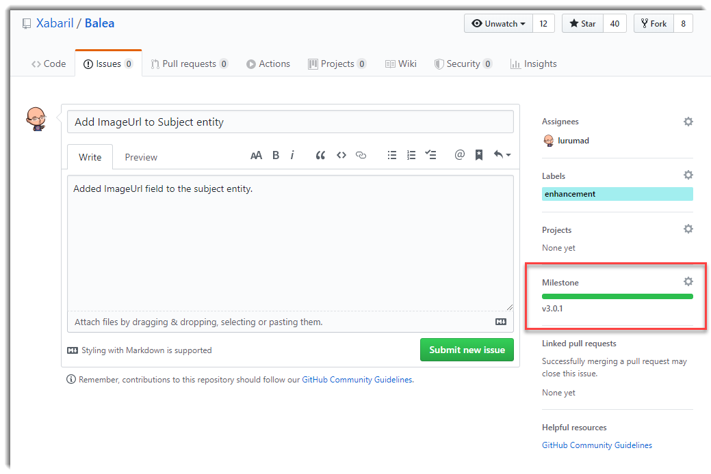
It’s important to label every issue or pull request to generate it in the correct category such us features, bugs, documentation, etc.
Using Github Actions to generate the release notes
The first Action we need to use is Release Note Generator GitHub Action. Kudos to the Decathlon Team to build such amazings Action.
Create a new yaml file in root directory .github/workflows/release-notes.yml and copy this content:
# Trigger the workflow on milestone events
on:
milestone:
types: [closed]
name: Milestone Closure
jobs:
create-release-notes:
runs-on: ubuntu-latest
steps:
- uses: actions/checkout@master
- name: Create Release Notes
uses: docker://decathlon/release-notes-generator-action:2.0.1
env:
GITHUB_TOKEN: "$"
OUTPUT_FOLDER: temp_release_notes
USE_MILESTONE_TITLE: "true"
This action Action will create our release notes file. You have to specify a GITHUB_TOKEN, an output folder and in our case use the milestone title.
Using Github Actions to generate the wiki pages
The second Action we need to use is Wiki Page Creator GitHub Action.
- name: Upload Release Notes to Wiki
uses: docker://decathlon/wiki-page-creator-action:latest
env:
ACTION_MAIL: YOUR_EMAIL
ACTION_NAME: NAME_OF_THE_USER_WHO_PUBLISH
GH_PAT: $
MD_FOLDER: temp_release_notes
OWNER: Xabaril
REPO_NAME: balea
SKIP_MD: README.md
We need to specify a personal access token. You can create it clicking on this link or following the next instructions:
To create a personal access token go to your profile and click on Settings
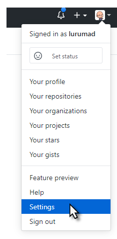
Click on Generate new token button:
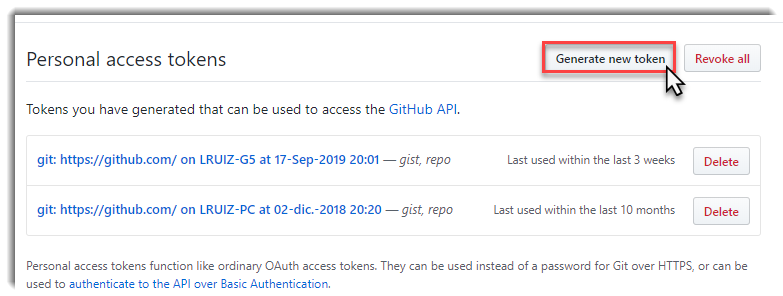
To use your token to access milestones/issuess from the Action, select repo:
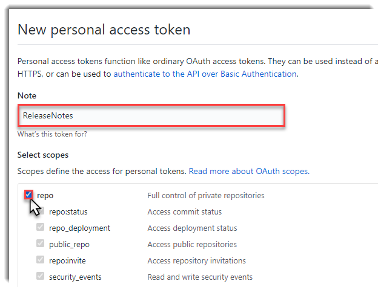
Copy the token:
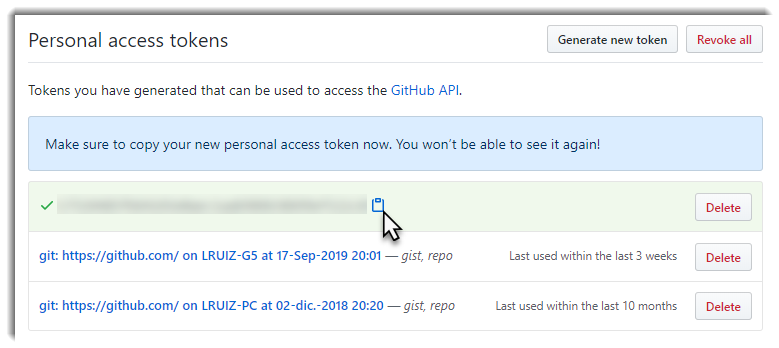
Go to your repository settings and click on Secrets and then click on New sectet button:
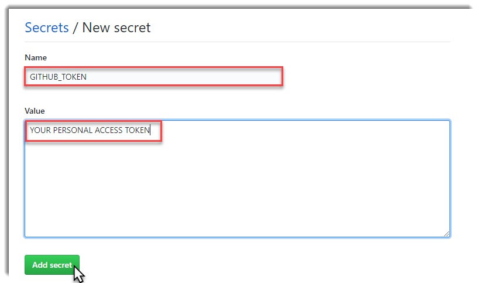
In this link you have a full example of the workflow.
Testing our workflow
Once we have all the previous steps completed, go to your milestone if you want to view a full detail of what new features, corrections and changes were made:
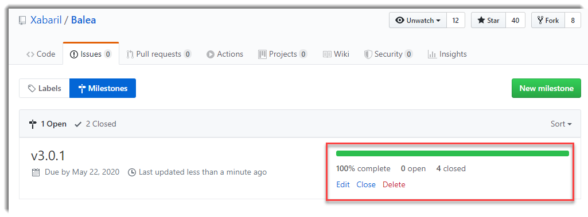
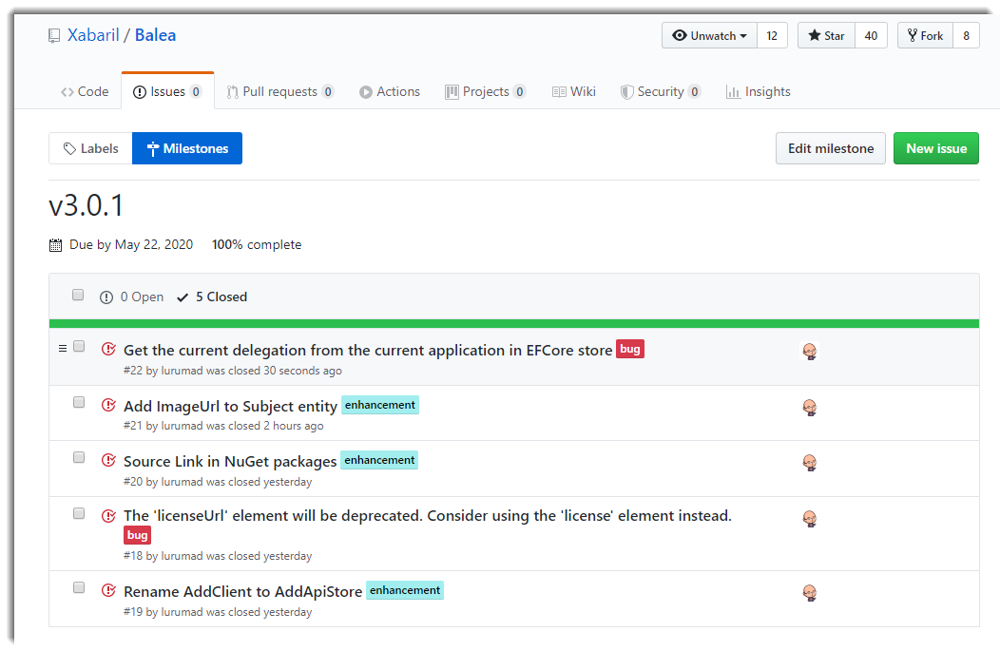
Close your milestone:
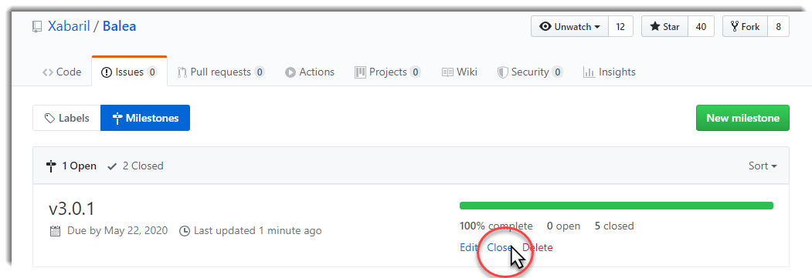
Go to the actions and check if the workflow it’s running:
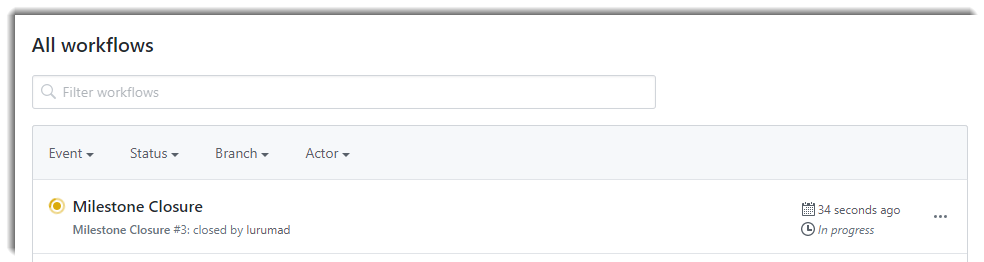
If there are not problems, the workflow should be finished ok:
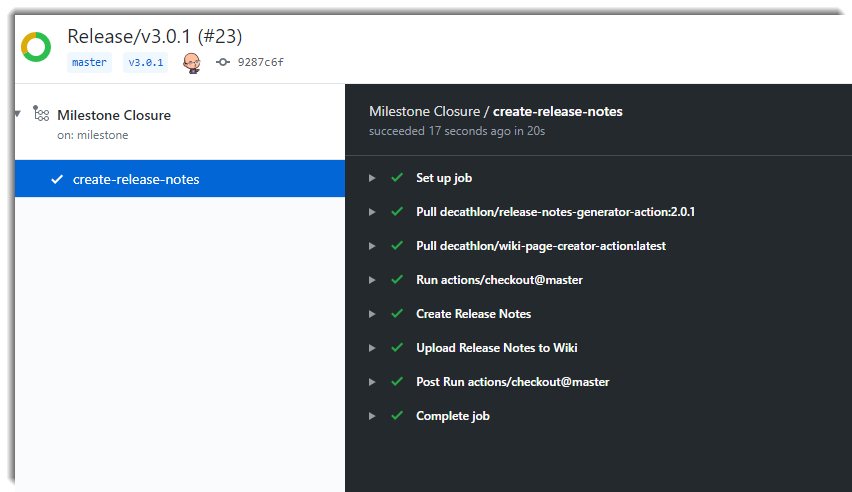
Go the wiki in your repository and check it the wiki has been published correctly:
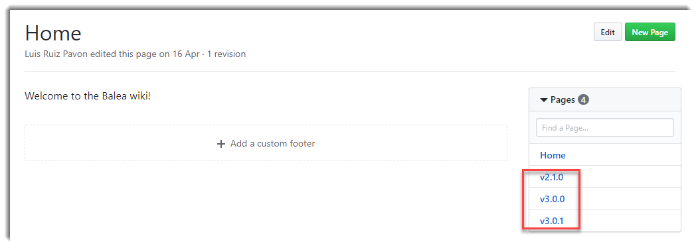
Choose the version in order to view the release notes and enjoy!
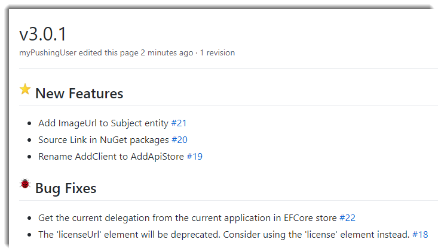
Conclusion
In this post I’ve try to show you how straightforward is to automatize the release notes of your projects using Github Actions and how you can deliver to your customers or users what new features, corrections and changes were made in a very nice visual way.


Comments